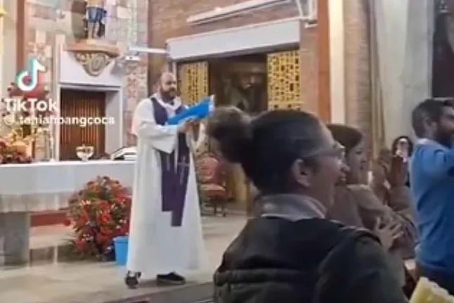
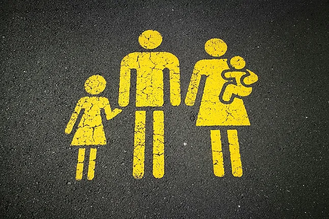

Un cura salesiano de Algeciras bendice a los niños con una pistola de agua
Un sacerdote de la parroquia María Auxiliadora y San Isidro de Algeciras sorprendió a los asistentes a una misa de renovación de promesas bautismales Un sacar una pistola de agua y lanzar agua bendita a un grupo de niños que se preparaban para hacer la comunión en 2025.
El hecho se ha hecho viral en las redes sociales después de que uno de los asistentes a la eucaristía compartiera las imágenes en Tiktok, mostrando un acto que acerca a los más pequeños a la iglesia con gestos como este.
"Fue un guiño para darle un tono festivo. Yo pienso en la mayoría de los niños que han sido bautizados de pequeños. Nadie se acuerda de ese momento", ha asegurado el párroco Francisco Cánovas a Mañaneros de TVE.
Algunos de los asistentes a la eucaristía han explicado a Europa Sur que la misa se celebró con normalidad. "El cura dijo que nadie se acuerda de su bautismo y que esa ceremonia era como el segundo bautismo de los niños. Se llevó a cabo como una misa cualquiera y el momento de la bendición lo hizo normal, con el acetre y el hisopo echando agua bendita sobre los niños. Cuando ya terminó la eucaristía, el cura dijo que los niños se habían quedado con ganas de más agua bendita, y sin que nadie se lo esperara sacó la escopeta y disparó el agua sobre los niños. Fue un momento muy divertido para todos", señalaron los testigos.
La renovación de las promesas bautismales se trata de un paso, un gesto, una etapa más en el camino de preparación a la Primera Comunión", indicó la cuenta de Facebook de la parroquia, aunque sin fotos del momento de la pistola de agua.
Así quedan los permisos con la nueva Ley de Familias
La Ley de Familias, impulsada por Ione Belarra en la legislatura pasada, vuelve a la primera fila parlamentaria, después de ser un proyecto paralizado por el adelanto electoral.
El ministro de Derechos Sociales, Consumo y Agenda 2030, Pablo Bustinduy, ha presentado el proyecto de ley al Consejo de Ministros con el mismo texto redactado en su día. El objetivo es lograr el respaldo necesario en el Congreso para que la entrada en vigor de la ley llegue por trámite de urgencia.
Según señaló el ministro, con la batería de medidas que compone la nueva Ley de Familias se busca alcanzar tres objetivos básicos: "Reconocer las diferentes situaciones familiares que existen en España", "mejorar la protección social de las familias" y "garantizar el derecho a conciliar la vida familiar con la laboral".
A grandes rasgos, las novedades son:
- Reconocimiento a las familias monoparentales
- Ampliación de los supuestos de las familias numerosas
- Equiparación de las parejas de hecho a los matrimonios
- Protección especial a otros colectivos, como las familias reconstituidas o aquellas con personas con discapacidad, entre otros colectivos.